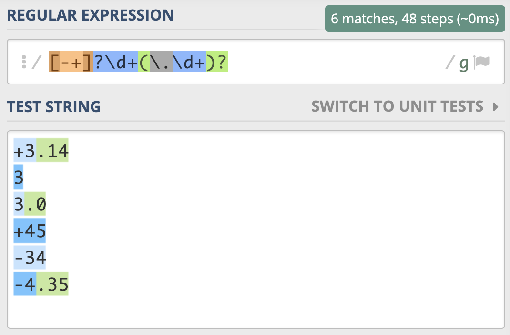
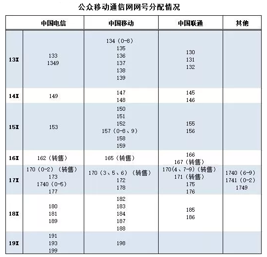
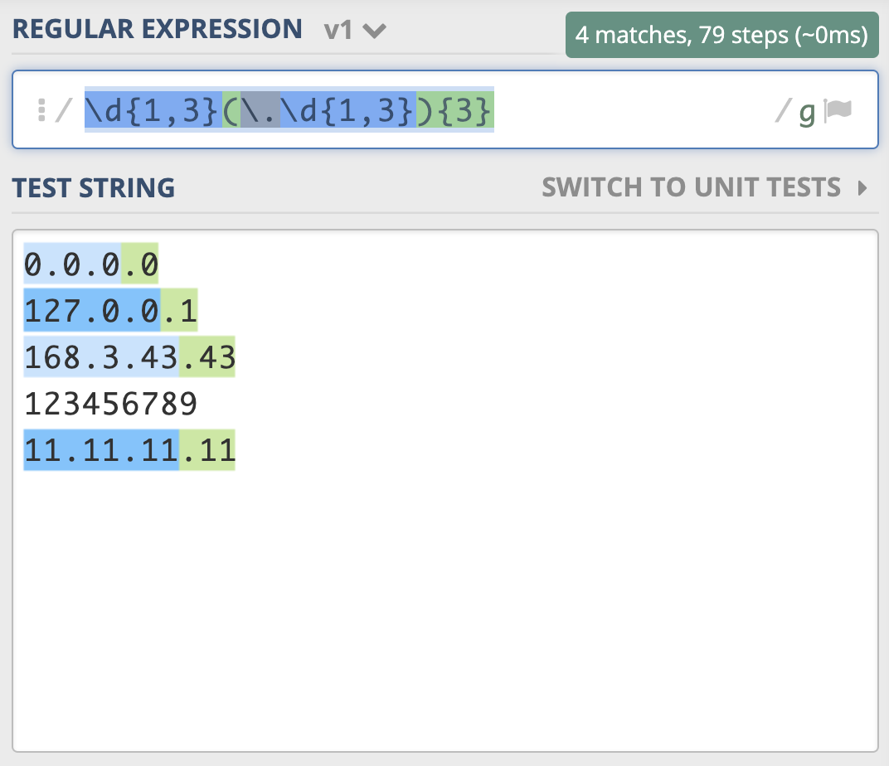
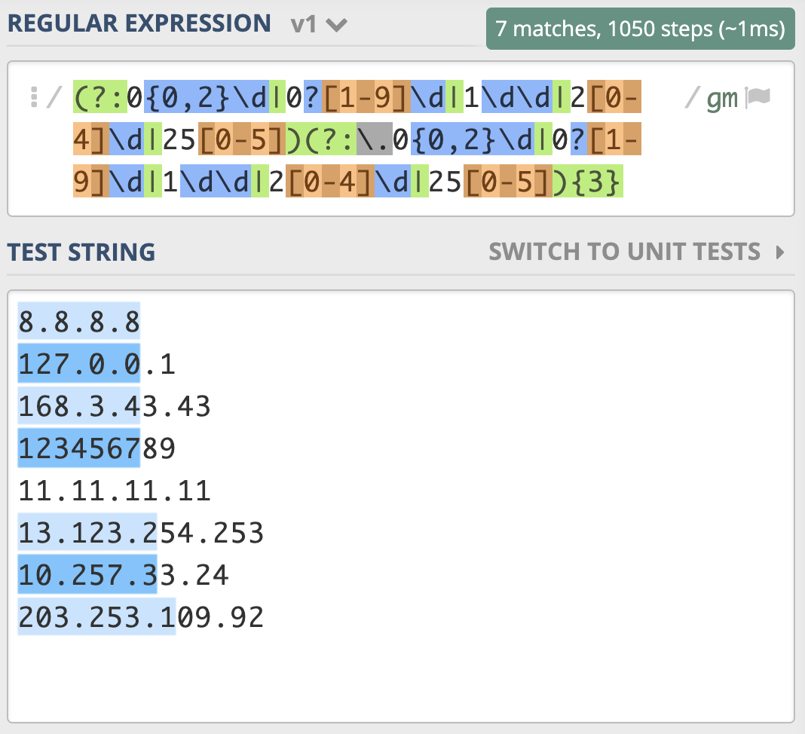
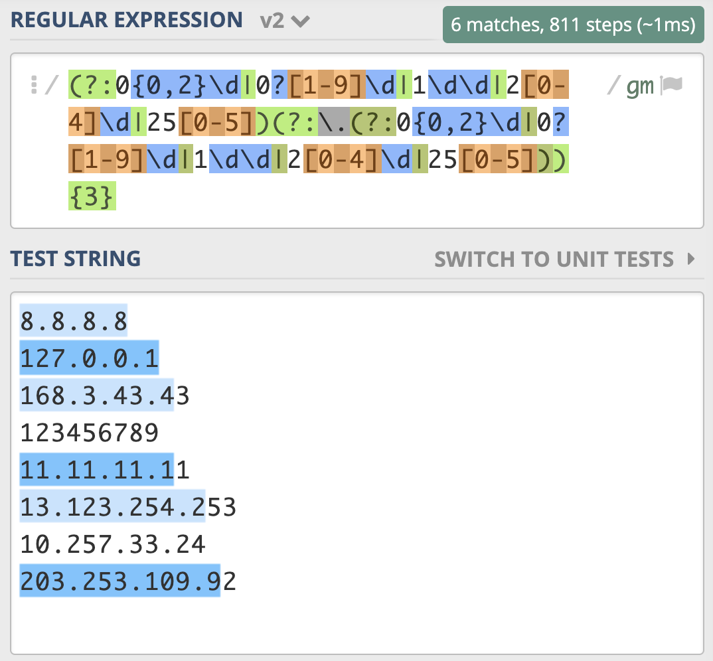
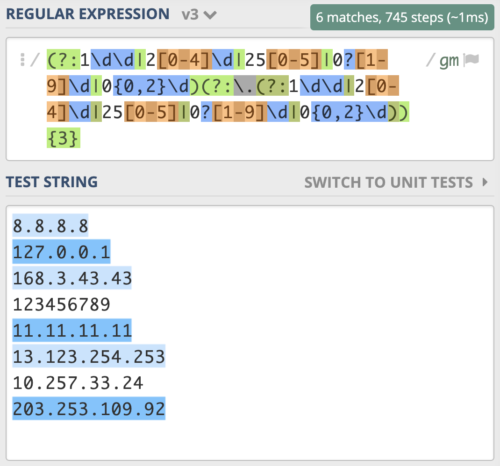
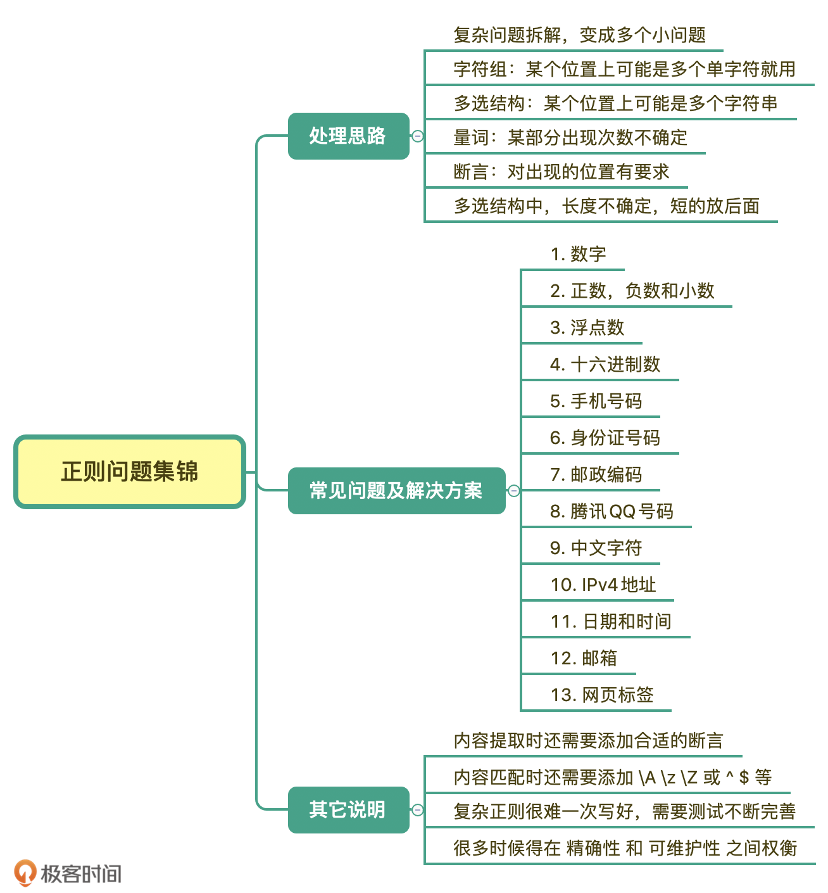

- 00 导读 余晟：我是怎么学习和使用正则的？.md.html
- 00 开篇词丨学习正则，我们到底要学什么？.md.html
- 01 元字符：如何巧妙记忆正则表达式的基本元件？.md.html
- 02丨量词与贪婪：小小的正则，也可能把CPU拖垮！.md.html
- 03 分组与引用：如何用正则实现更复杂的查找和替换操作？.md.html
- 04 匹配模式：一次性掌握正则中常见的4种匹配模式.md.html
- 05 断言：如何用断言更好地实现替换重复出现的单词？.md.html
- 06 转义：正则中转义需要注意哪些问题？.md.html
- 07 正则有哪些常见的流派及其特性？.md.html
- 08 应用1：正则如何处理 Unicode 编码的文本？.md.html
- 09 应用2：如何在编辑器中使用正则完成工作？.md.html
- 10 应用3：如何在语言中用正则让文本处理能力上一个台阶？.md.html
- 11 如何理解正则的匹配原理以及优化原则？.md.html
- 12 问题集锦：详解正则常见问题及解决方案.md.html
- 加餐 从编程语言的角度来理解正则表达式.md.html
- 结束语 使用正则提高你的人生效率.md.html
- 捐赠
12 问题集锦：详解正则常见问题及解决方案
你好，我是伟忠。今天我来给你讲一讲，使用正则处理一些常见问题的方法。
问题处理思路
在讲解具体的问题前，我先来说一下使用正则处理问题的基本思路。有一些方法比较固定，比如将问题分解成多个小问题，每个小问题见招拆招：某个位置上可能有多个字符的话，就⽤字符组。某个位置上有多个字符串的话，就⽤多选结构。出现的次数不确定的话，就⽤量词。对出现的位置有要求的话，就⽤锚点锁定位置。
在正则中比较难的是某些字符不能出现，这个情况又可以进一步分为组成中不能出现，和要查找的内容前后不能出现。后一种用环视来解决就可以了。我们主要说一下第一种。
如果是要查找的内容中不能出现某些字符，这种情况比较简单，可以通过使用中括号来排除字符组，比如非元音字母可以使用 [^aeiou]来表示。
如果是内容中不能出现某个子串，比如要求密码是6位，且不能有连续两个数字出现。假设密码允许的范围是 \w，你应该可以想到使用 \w{6} 来表示 6 位密码，但如果里面不能有连续两个数字的话，该如何限制呢？这个可以环视来解决，就是每个字符的后面都不能是两个数字（要注意开头也不能是 \d\d），下面是使用 Python3语言测试的示例。
>>> import re
>>> re.match(r'^((?!\d\d)\w){6}$', '11abcd') # 不能匹配上
# 提示 (?!\d\d) 代表右边不能是两个数字，但它左边没有正则，即为空字符串
>>> re.match(r'^((?!\d\d)\w){6}$', '1a2b3c') # 能匹配上
<re.Match object; span=(0, 6), match='1a2b3c'>
>>> re.match(r'^(\w(?!\d\d)){6}$', '11abcd') # 错误正则示范
<re.Match object; span=(0, 6), match='11abcd'>
在写完正则后，我们可以通过一些工具去调试，先要确保正则满足功能需求，再看一下有没有性能问题， 如果功能不正确，性能考虑再多其实也没用。
常见问题及解决方案
- ### 匹配数字
数字的匹配比较简单，通过我们学习的字符组，量词等就可以轻松解决。
- 数字在正则中可以使用 \d 或 [0-9] 来表示。
- 如果是连续的多个数字，可以使用 \d+ 或 [0-9]+。
- 如果 n 位数据，可以使用 \d{n}。
- 如果是至少 n 位数据，可以使用 \d{n,}。
- 如果是 m-n 位数字，可以使用 \d{m,n}。
- ### 匹配正数、负数和小数
如果希望正则能匹配到比如 3，3.14，-3.3，+2.7 等数字，需要注意的是，开头的正负符号可能有，也可能没有，所以可以使用 [-+]? 来表示，小数点和后面的内容也不一定会有，所以可以使用 (?:.\d+)? 来表示，因此匹配正数、负数和小数的正则可以写成 [-+]?\d+(?:.\d+)?。

非负整数，包含 0 和 正整数，可以表示成[1-9]\d*|0。
非正整数，包含 0 和 负整数，可以表示成-[1-9]\d*|0。
- ### 浮点数
这个问题你可能觉得比较简单，其中表示正负的符号和小数点可能有，也可能没有，直接用 [-+]?\d+(?:.\d+)? 来表示。
如果我们考虑 .5 和 +.5 这样的写法，但一般不会有 -.5 这样的写法。正则又如何写呢？
我们可以把问题拆解，浮点数分为符号位、整数部分、小数点和小数部分，这些部分都有可能不存在，如果我们每个部分都加个问号，这样整个表达式可以匹配上空。
根据上面的提示，负号的时候整数部分不能没有，而正数的时候，整数部分可以没有，所以正则你可以将正负两种情况拆开，使用多选结构写成 -?\d+(?:.\d+)?|\+?(?:\d+(?:.\d+)?|.\d+)（示例）。
这个可以拆分成两个问题：
负数浮点数表示：-\d+(?:.\d+)?。
正数浮点数表示：\+?(?:\d+(?:.\d+)?|.\d+)。
- ### 十六进制数
十六进制的数字除了有0-9之外，还会有 a-f（或A-F） 代表 10 到 15 这6个数字，所以正则可以写成 [0-9A-Fa-f]+。
- ### 手机号码
手机号应该是比较常见的，手机号段比较复杂，如果要兼容所有的号段并不容易。目前来看，前四位是有一些限制，甚至1740 和 1741 限制了前5位号段。
我们可以简单地使用字符组和多选分支，来准确地匹配手机号段。如果只限制前2位，可以表示成 1[3-9]\d{9}，如果想再精确些，限制到前三位，比如使用1(?:3\d|4[5-9]|5[0-35-9]|6[2567]|7[0-8]|8\d|9[1389])\d{8}来表示。如果想精确到4位，甚至5位，可以根据公开的号段信息自己来写一下，但要注意的是，越是精确，只要有新的号段，你就得改这个正则，维护起来会比较麻烦。另外，在实际运用的时候，你可能还要考虑一下有一些号码了+86或0086之类的前缀的情况。
手机号段的正则写起来其实写起来并不难，但麻烦的是后期的维护成本比较高，我之前就遇到过这种情况，买了一个188的移动号码，有不少系统在这个号段开放了挺长时间之后，还认为这个号段不合法。
目前公开的手机号段（图片来源）。

- ### 身份证号码
我国的身份证号码是分两代的，第一代是15位，第二代是18位。如果是18位，最后一位可以是X（或x），两代开头都不能是 0，根据规则，你应该能很容易写出相应的正则，第一代可以用 [1-9]\d{14} 来表示，第二代比第一代多3位数据，可以使用量词0到1次，即写成
[1-9]\d{14}(\d\d[0-9Xx])?。
- ### 邮政编码
邮编一般为6位数字，比较简单，可以写成 \d{6}，之前我们也提到过，6位数字在其它情况下出现可能性也非常大，比如手机号的一部分，身份证号的一部分，所以如果是数据提取，一般需要添加断言，即写成 (?<!\d)\d{6}(?!\d)。
- ### 腾讯QQ号码
目前QQ号不能以0开头，最长的有10位，最短的从 10000（5位）开始。从规则上我们可以得知，首位是1-9，后面跟着是4到9位的数字，即可以使用 [1-9][0-9]{4,9} 来表示。
- ### 中文字符
中文属于多字节Unicode字符，之前我们讲过比如通过 Unicode 属性，但有一些语言是不支持这种属性的，可以通过另外一个办法，就是码值的范围，中文的范围是 4E00 - 9FFF 之间，这样可以覆盖日常使用大多数情况。
不同的语言是表示方式有一些差异，比如在 Python，Java，JavaScript 中，Unicode 可以写成 \u码值 来表示，即匹配中文的正则可以写成 [\u4E00-\u9FFF]，如果在 PHP 中使用，Unicode 就需要写成 \u{码值} 的样式。下面是在 Python3 语言中测试的示例，你可以参考一下。
# 测试环境，Python3
>>> import re
>>> reg = re.compile(r'[\u4E00-\u9FFF]')
>>> reg.findall("和伟忠一起学正则regex")
['和', '伟', '忠', '一', '起', '学', '正', '则']
- ### IPv4地址
IPv4 地址通常表示成 27.86.1.226 的样式，4个数字用点隔开，每一位范围是 0-255，比如从日志中提取出IP，如果不要求那么精确，一般使用 \d{1,3}(.\d{1,3}){3}就够了，需要注意点号需要转义。

如果我们想更精确地匹配，可以针对一到三位数分别考虑，一位数时可以表示成 0{0,2}\d，两位数时可以表示成 0?[1-9]\d，三位数时可以表示成 1\d\d|2[0-4]\d|25[0-5]，使用多选分支结构把他们写到一起，就是 0{0,2}\d|0?[1-9]\d|1\d\d|2[0-4]\d|25[0-5]这样。
这是表示出了 IPv4 地址中的一位（正则假设是 X），我们可以把 IPv4 表示成X.X.X.X，可以使用量词，写成 (?:X.){3}X 或 X(?:.X){3}，由于 X 本身比较复杂，里面有多选分支结构，所以需要把它加上括号，所以 IPv4 的正则应该可以写成-
(?:0{0,2}\d|0?[1-9]\d|1\d\d|2[0-4]\d|25[0-5])(?:.0{0,2}\d|0?[1-9]\d|1\d\d|2[0-4]\d|25[0-5]){3}。
你以为这么写就对了么，如果你测试一下就发现，匹配行为很奇怪。（示例）

看到这个结果，你可能觉得太难了，不要担心，更不要放弃。其实我一开始也觉得这么写就可以了，我也需要测试，如果不符合预期，那就找到原因不断完善。
我们根据输出结果的表现，分析一下原因。原因主要有两点，都和多选分支结构有关系。我们想的是所有的一到三位数字前面都有一个点，重复三次，但点号和 0{0,2}\d 写到一起，意思是一位数字前面有点，两位和三位数前面没有点，所以需要使用括号把点挪出去，最终写成(?:0{0,2}\d|0?[1-9]\d|1\d\d|2[0-4]\d|25[0-5])(?:.(?:0{0,2}\d|0?[1-9]\d|1\d\d|2[0-4]\d|25[0-5])){3}。-
但经过测试，你会发现还是有问题，最后一个数字只匹配上了一位。（示例）

上一讲正则匹配原理中，我们讲解了NFA引擎在匹配多分支选择结构的时候，优先匹配最左边的，所以找到了一位数符合要求时，它就”急于“报告，并没有找出最长且符合要求的结果，这就要求我们在写多分支选择结构的时候，要把长的分支放左边，这样就可以解决问题了，即正则写成(?:1\d\d|2[0-4]\d|25[0-5]|0?[1-9]\d|0{0,2}\d)(?:.(?:1\d\d|2[0-4]\d|25[0-5]|0?[1-9]\d|0{0,2}\d)){3}。

在这个案例里，我们通过一步步推导，得到最终的答案。其实是想让你明白，你在写正则的时候，需要以什么样的分析思路来思考，最终如何解决问题，复杂的正则也很难一下子写出来，需要写完之后进行测试，在发现不符合预期后，不断进行完善。
在这里我还是想说一下，如果只是验证是不是合法的 IPv4 地址，可以直接使用点号切割，验证一下是不是四个部分，每个部分是不是在 0-255 之间就可以了，比使用正则来校验要简单很多，而且不容易出错。总之正则不是解决问题的唯一方法，我们要在合适的时候使用它，而不是说能用正则的都要用正则来解决。
- ### 日期和时间
假设日期格式是 yyyy-mm-dd，如果不那么严格，我们可以直接使用 \d{4}-\d{2}-\d{2}。如果再精确一些，比如月份是 1-12，当为一位的时候，前面可能不带 0，可以写成 01 或 1，月份使用正则，可以表示成 1[0-2]|0?[1-9]，日可能是 1-31，可以表示成 [12]\d|3[01]|0?[1-9]，这里需要注意的是 0?[1-9] 应该放在多选分支的最后面，因为放最前面，匹配上一位数字的时候就停止了（示例），正确的正则（示例）应该是 \d{4}-(?:1[0-2]|0?[1-9])-(?:[12]\d|3[01]|0?[1-9])。
时间格式比如是 23:34，如果是24小时制，小时是 0-23，分钟是 0-59，所以可以写成 (?:2[0-3]|1\d|0?\d):(?:[1-5]\d|0?\d)。12小时制的也是类似的，你可以自己想一想怎么写。
另外，日期中月份还有大小月的问题，比如2月闰年可以是29日，使用正则没法验证日期是不是正确的。我们也不应该使用正则来完成所有事情，而是只使用正则来限制具体的格式，比如四位数字，两位数字之类的，提取到之后，使用日期时间相关的函数进行转换，如果失败就证明不是合法的日期时间。
-
邮箱
邮箱示例：
邮箱的组成是比较复杂的，格式是 用户名@主机名，用户名部分通常可以有英文字母，数字，下划线，点等组成，但其中点不能在开头，也不能重复出现。根据 RFC5322 没有办法写出一个完美的正则，你可以参考一下这个网站。不过我们可以实现一些简体的版本，比如：[a-zA-Z0-9_.+-]+@[a-zA-Z0-9-]+.[a-zA-Z0-9-.]+。
日常使用应该也够了。
- ### 网页标签
配对出现的标签，比如 title，一般网页标签不区分大小写，我们可以使用 (?i)<title>.*?</title>来进行匹配。在提取引号里面的内容时，可以使用 [^"]+，方括号里面的内容时，可以使用 [^>]+ 等方式。
我们通过一些常见的问题，逐步进行分析，讲解了正则表达式书写时的思路，和一些常见的错误。这些正则如果用于校验，还需要添加断言，比如 \A 和 \z（或\Z），或 ^ 和 $。如果用于数据提取，还应当在首尾添加相应的断言。
总结
好了，今天的内容讲完了，我来带你总结回顾一下。
今天我们了解了下正则处理问题的基本思路，通常是将问题拆解成多个小问题，每个小问题见招拆招：某个位置上可能是多个单字符就⽤字符组，某个位置上可能是多个字符串就⽤多选结构，出现次数不确定就⽤量词，对出现的位置有要求就用断言。遇到问题，你遵循这些套路，写出正则其实并不难。
我们从一些日常的问题入手，详细地讲解了一些常见的案例，也讲解了可能会遇到的一些坑，比如在使用多选结构时要注意的问题，你在后续工作中要注意避开这些问题。
我在这里给你放了一张今天所讲内容的总结脑图。

课后思考
最后，我们来做一个小练习吧。你可以根据今天我们学习 IPv4 的方法，来写一下 IPv6 的正则表达式么？说一下你的分析思路和最终的答案，建议自己动手测试一下写出的正则。
IPv6示例
ABCD:EF01:2345:6789:ABCD:EF01:2345:6789
这种表示法中，每个X的前导0是可以省略的，例如：
2001:0DB8:0000:0023:0008:0800:200C:417A
上面的IPv6地址，可以表示成下面这样
2001:DB8:0:23:8:800:200C:417A
备注：这里不考虑0位压缩表示
好，今天的课程就结束了，希望可以帮助到你，也希望你在下方的留言区和我参与讨论，并把文章分享给你的朋友或者同事，一起交流一下。
© 2019 - 2023 Liangliang Lee. Powered by gin and hexo-theme-book.